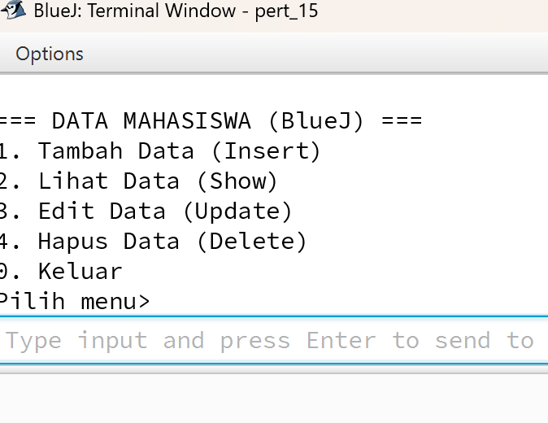
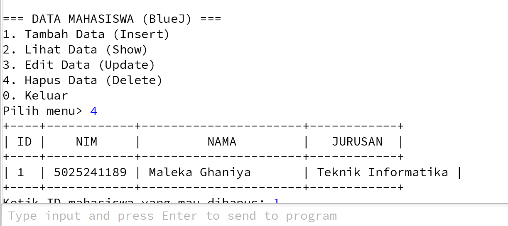

Berikut adalah penjelasan detail baris demi baris dari kode yang sudah berhasil kamu jalankan.
1. Bagian Import (Kotak Perkakas)
Posisi: Paling atas file. Kita memanggil alat-alat yang dibutuhkan sebelum bekerja.
import java.sql.*;
import java.util.Scanner;
java.sql.* : Wajib ada! Isinya adalah alat untuk "ngobrol" dengan database (seperti Connection, Statement, ResultSet).Scanner : Alat untuk membaca input ketikan keyboard kamu.
2. Konfigurasi Database
Posisi: Di dalam class, sebelum main method. Ini adalah "alamat tujuan" agar Java tidak salah sambung.
static final String DB_URL = "jdbc:mysql://localhost:3306/bluej_crud" ;
static final String USER = "root" ;
static final String PASS = "Maleka_0809" ;
DB_URL : Alamat lengkap database.
localhost = komputer ini.
3306 = nomor port MySQL.
bluej_crud = nama database di HeidiSQL.PASS : Password database kamu. (Ini bagian yang tadi bikin error karena sempat dikosongi).
3. Proses Koneksi (Jabat Tangan)
Posisi: Di dalam public static void main.
Class.forName("com.mysql.cj.jdbc.Driver" );
conn = DriverManager.getConnection(DB_URL, USER, PASS);
Penjelasan:
Class.forName: Membangunkan file Library .jar (ikon cangkir kopi). Kalau file jar belum dimasukkan ke BlueJ, program mati di sini.getConnection: Java mengetuk pintu MySQL dengan Username dan Password yang kamu isi. Jika cocok, pintu terbuka.
4. Simpan Data (PreparedStatement)
Posisi: Di method insertData. Kenapa kita pakai tanda tanya ?
String sql = "INSERT INTO mahasiswa (nama, nim) VALUES (?, ?)" ;
PreparedStatement ps = conn.prepareStatement(sql);
ps.setString(1, nama);
ps.setString(2, nim);
ps.execute();
Teknik ini disebut PreparedStatement .
Tujuannya untuk Keamanan (mencegah hacker mengacak-acak database lewat form input).
Juga agar kode lebih rapi tanpa ribet dengan tanda kutip.
5. Tampilkan Data (ResultSet)
Posisi: Di method showData.
while (rs.next()) {
String nama = rs.getString("nama" );
System.out.println(nama);
}
rs (ResultSet) adalah tabel hasil tarikan data dari database.rs.next() bekerja seperti telunjuk jari:
Dokumen


kode